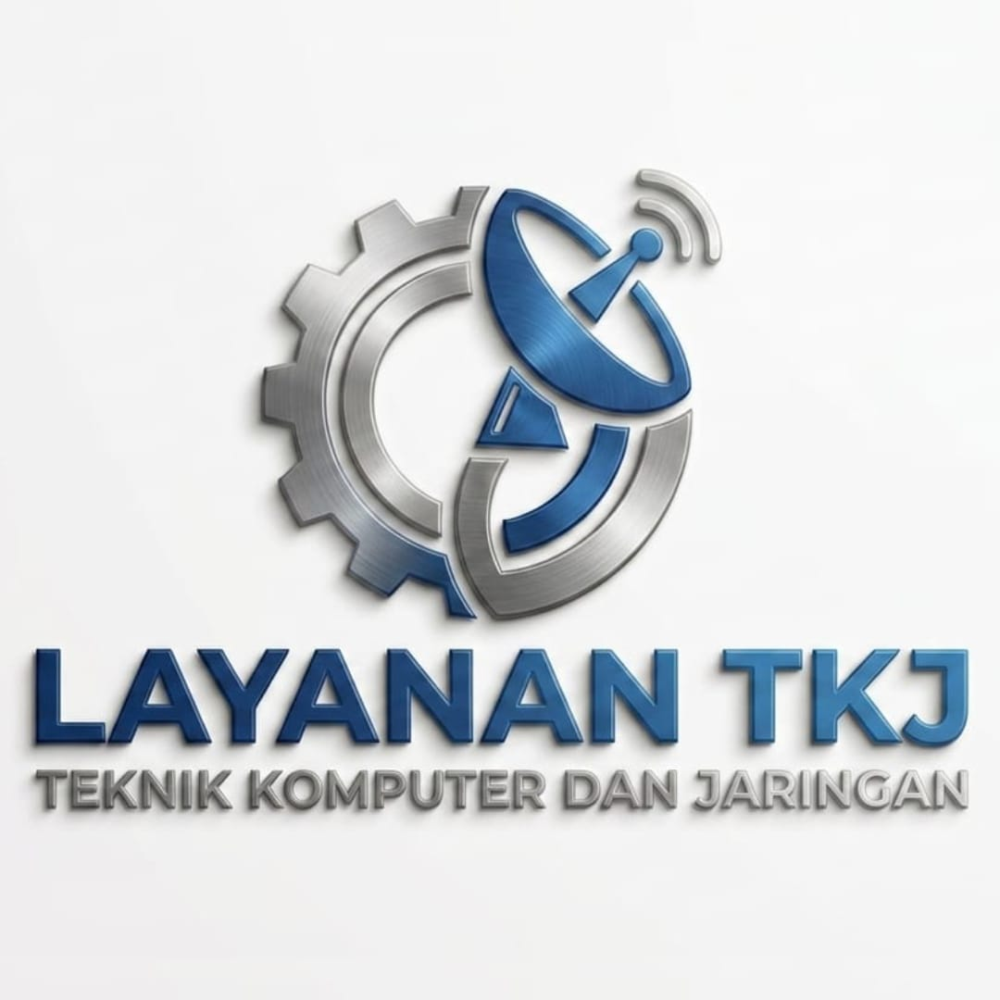

Teknik Komputer dan Jaringan
Menjadi layanan TKJ yang unggul, modern, kreatif, dan terpercaya dalam bidang komputer serta jaringan.
• Install Windows
• Setting Jaringan
• Perbaikan Hardware
• Crimping Kabel LAN
• Konfigurasi Router